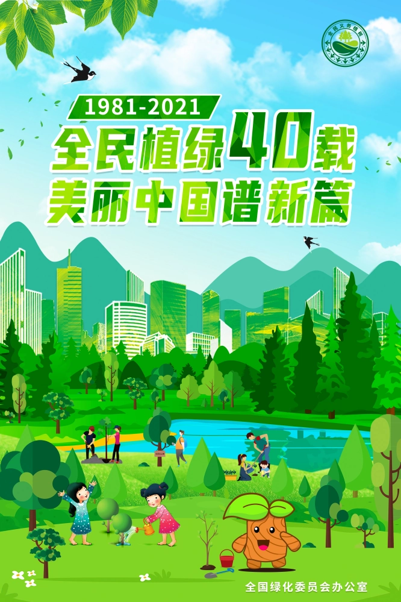
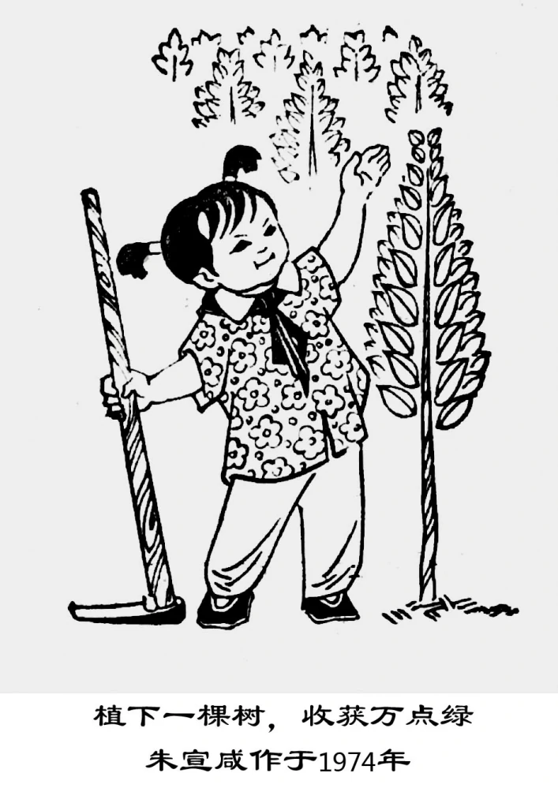

中国古代在清明节时节就有插柳植树的传统，历史上最早在路旁植树是由一位叫韦孝宽的人于1400多年前从陕西首创的。 韦孝宽（公元508—580年）是西魏、北周时期的一位名将，京兆杜陵（今西安市东南）人。据唐李延寿《北史》列传第五十二记载 ，西魏废帝二年（公元552年），韦孝宽因军功被授予雍州刺史。自古以来，官道上每隔一华里便在路边设置一个土台，作为标记， 用以计算道路的里程，也就是现在的里程碑。韦孝宽上任后，发现土台的缺点很多，经风吹日晒，特别是雨水冲涮，很容易崩塌， 需要经常进行维修，不但增加了国家的开支，也使百姓遭受劳役之苦，既费时费力又不方便。韦孝宽经过调查了解之后，毅然下令 雍州境内所有的官道上设置土台的地方一律改种一棵槐树，用以取代土台。这样一来不仅不失其标记和计程作用，还能为往来行人 遮风挡雨，并且不需要修补。韦孝宽的这一作法，无疑是造福桑梓，减轻家乡百姓负担、利国利民的重大举措。陕西作为历史上最 早在官道上植树的地方，曾经是全国道路绿化的表率，而韦孝宽最早栽种的槐树千百年来一直受到人们的喜爱，特别是陕西人对这种槐树更是情有独钟，十分喜爱，并且广为种植，现在这种槐树已经作为西安市的象征，被确定为市树。

1981年12月13日，通过《关于开展全民义务植树运动的决议》。
1982年，国务院颁布《关于开展全民义务植树运动的实施办法》。
2020年7月1日起，施行新修订的《中华人民共和国森林法》，明确每年3月12日为植树节.
新森林法实行森林分类经营管理，将森林分为公益林和商品林，公益林实行严格保护，商品林则由林业经营者依法自主经营，以此来保护好各类林业经营主体的合法权益，实现林业建设可持续发展.
此外，新森林法调整了林木采伐许可证核发范围，采伐自然保护区以外的竹林不再办理采伐许可证。非林地上的农田防护林、防风固沙林、护路林、护岸护堤林和城镇林木的采伐，按照《公路法》《防洪法》《城市绿化条例》等规定进行管理.
植树节是为了保护倡导人民种植树木，鼓励人民爱护树木，提醒人民重视树木。树木对于人类的生存，对于地球的生态环境，都是起着非常重要的作用。
中国设立中国植树节的根本目的在于保护森林，增种树木。每一棵大树的生长都对人类社会有相当大的积极作用。

印度加尔各答农业大学德斯教授对一棵树的生态价值进行计算：
一棵50年树龄的树，累计计算，产生氧气的价值约31,200美元；
吸收有害气体、防止大气污染价值约62,500美元；
增加土壤肥力价值约31,200美元；
涵养水源价值37,500美元；
为鸟类及其他动物提供繁衍场所价值31,250美元；
>产生蛋白质价值2,500美元，总计创值约196,000美元.
想了解更多详情请点击此处！